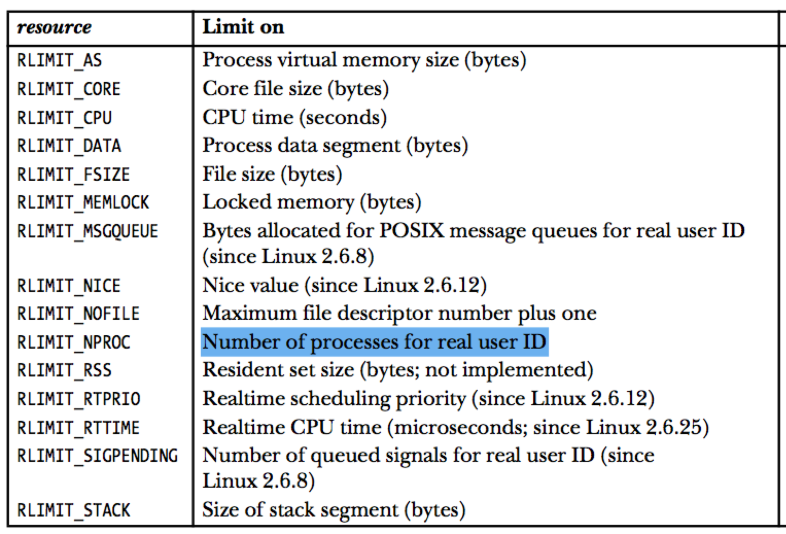

每一个进程都消耗系统上的cpu和内存资源，本文将详细介绍这些资源相关的系统调用。并且结合docker，简要介绍docker中对进程资源限制的支持。
进程资源使用情况
系统调用getrusage()用于获取进程当前消耗各种系统资源的统计信息。
1
2
3
4
5
|
#include <sys/time.h>
#include <sys/resource.h>
int getrusage(int who, struct rusage *usage);
|
who有三种取值：RUSAGE_SELF、RUSAGE_CHILDREN、RUSAGE_THREAD;
RUSAGE_SELF代表获取当前调用进程的资源信息RUSAGE_CHILDREN代表获取当前调用进程的所有子进程的资源信息RUSAGE_THREAD代表获取当前调用线程的资源信息
usage的数据结构定义如下，它用来保存返回的资源信息：
1
2
3
4
5
6
7
8
9
10
11
12
13
14
15
16
17
18
|
struct rusage {
struct timeval ru_utime; /* user CPU time used */
struct timeval ru_stime; /* system CPU time used */
long ru_maxrss; /* maximum resident set size */
long ru_ixrss; /* integral shared memory size */
long ru_idrss; /* integral unshared data size */
long ru_isrss; /* integral unshared stack size */
long ru_minflt; /* page reclaims (soft page faults) */
long ru_majflt; /* page faults (hard page faults) */
long ru_nswap; /* swaps */
long ru_inblock; /* block input operations */
long ru_oublock; /* block output operations */
long ru_msgsnd; /* IPC messages sent */
long ru_msgrcv; /* IPC messages received */
long ru_nsignals; /* signals received */
long ru_nvcsw; /* voluntary context switches */
long ru_nivcsw; /* involuntary context switches */
};
|
更多信息请参考：http://man7.org/linux/man-pages/man2/getrusage.2.html
进程资源限制
每一个进程都有一组资源限制，用于限制其所能使用的资源量。例如，我们可以在执行程序之前，通过ulimit这个内建的bash命令设置其资源使用限制。
注意：linux系统上，/proc/PID/limits可以查看当前指定进程的资源限制情况。
1
2
3
4
5
6
7
8
|
#include <sys/time.h>
#include <sys/resource.h>
int getrlimit(int resource, struct rlimit *rlim);
int setrlimit(int resource, const struct rlimit *rlim);
int prlimit(pid_t pid, int resource, const struct rlimit *new_limit,
struct rlimit *old_limit);
|
getrlimit用于获取进程当前的资源限制情况，setrlimit用于设置进程的资源限制。prlimit是linux上的系统调用，它结合了getrlimit和setrlimit的功能，并进行了扩展（可以设定指定进程的资源限制）。
resource 参数的可选值如下：

struct rlimit的定义如下：
1
2
3
4
|
struct rlimit {
rlim_t rlim_cur; /* Soft limit */
rlim_t rlim_max; /* Hard limit (ceiling for rlim_cur) */
};
|
软限制：使用资源时，用于进行是否超过限制的判断，其值可以在0和硬限制之间调整。
硬限制: 用于提供软限制的上限。
注意注意
尽管资源限制是针对进程的，但是有些资源不能以进程的角度衡量，一般是以用户的角度去衡量的。比如：RLIMIT_NPROC,它代表了一个用户所能运行的进程数量。
具体各种资源的详细描述，请参考：http://man7.org/linux/man-pages/man2/getrlimit.2.html
RLIMIT_NPROC 示例
该示例程序展示了RLIMIT_NPROC对用户进程个数的限制。
1
2
3
4
5
6
7
8
|
$ ./rlimit_nproc 6 10
Initial maximum process limits: soft=4096; hard=10450
New maximum process limits: soft=6; hard=10
Child 1 (PID = 23132) started
Child 2 (PID = 23133) started
Child 3 (PID = 23134) started
Child 4 (PID = 23135) started
error fork: Resource temporarily unavailable
|
执行效果如上：我们仅创建了4个进程，因为该用户已经启动了2个进程。
源代码如下：
print_rlimit.h 文件：
1
|
int print_rlimit(const char *msg, int resource);
|
print_rlimit.c 文件：
1
2
3
4
5
6
7
8
9
10
11
12
13
14
15
16
17
18
19
20
21
22
23
24
25
26
27
28
29
30
31
32
|
#include <sys/resource.h>
#include <stdio.h>
#include "print_rlimit.h"
int print_rlimit(const char *msg, int resource) {
struct rlimit rlim;
if (getrlimit(resource, &rlim) == -1)
return -1;
printf("%s soft=", msg);
if (rlim.rlim_cur == RLIM_INFINITY)
printf("infinite");
#ifdef RLIM_SAVED_CUR
else if (rlim.rlim_cur == RLIM_SAVED_CUR)
printf("unrepresentable");
#endif
else
printf("%lld", (long long)rlim.rlim_cur);
printf("; hard=");
if (rlim.rlim_max == RLIM_INFINITY)
printf("infinite");
#ifdef RLIM_SAVED_MAX
else if (rlim.rlim_max == RLIM_SAVED_MAX)
printf("unrepresentable");
#endif
else
printf("%lld\n", (long long)rlim.rlim_max);
return 0;
}
|
rlimit_nproc.c文件：
1
2
3
4
5
6
7
8
9
10
11
12
13
14
15
16
17
18
19
20
21
22
23
24
25
26
27
28
29
30
31
32
33
34
35
36
37
38
39
40
41
42
43
44
45
46
47
48
49
50
51
52
53
54
|
#include <sys/resource.h>
#include <stdio.h>
#include <string.h>
#include <stdlib.h>
#include <unistd.h>
#include <errno.h>
#include "print_rlimit.h"
int get_int(const char *arg) {
long res;
char *endptr;
res = strtol(arg, &endptr, 10);
return res;
}
int main(int argc, char **argv) {
struct rlimit rl;
int j;
pid_t child_pid;
if (argc < 2 || argc > 3 || strcmp(argv[1], "--help") == 0) {
printf("%s soft-limit [hard-limit]\n", argv[0]);
return 0;
}
print_rlimit("Initial maximum process limits: ", RLIMIT_NPROC);
// set new process limits(hard == soft if not specified)
rl.rlim_cur = (argv[1][0] == 'i') ? RLIM_INFINITY : get_int(argv[1]);
rl.rlim_max = (argc == 2) ? rl.rlim_cur :
(argv[2][0] == 'i') ? RLIM_INFINITY : get_int(argv[2]);
if (setrlimit(RLIMIT_NPROC, &rl) == -1) {
printf("setrlimit error\n");
return -1;
}
print_rlimit("New maximum process limits: ", RLIMIT_NPROC);
// create as many children as possible
for (j = 1; ; j++) {
switch(child_pid = fork()) {
case -1:
printf("error fork: %s\n", strerror(errno));
exit(-1);
case 0: // child
_exit(EXIT_SUCCESS);
default: // parent
printf("Child %d (PID = %ld) started\n", j, (long) child_pid);
break;
}
}
}
|
编译方法：
1
|
# gcc -o rlimit_nproc rlimit_nproc.c print_rlimit.c
|
注意
root用户对RLIMIT_NPROC没有效果，即RLIMIT_NPROC不能限制root用户可以运行的进程数。
具体内核代码可以参考： kernel/sys.c(line 449-476)
docker中对进程资源限制的支持
目前，docker中也提供了对进程资源限制的支持，我们可以使用--ulimit参数来进行资源限制的设置。其值的形式为：<type>=<soft limit>[:<hard limit>]，例如：
1
2
|
# docker run --ulimit nofile=1024:1024 --rm debian sh -c "ulimit -n"
1024
|
注意：目前不支持as这个资源。
另外注意nproc这个资源限制，它代表了一个用户所能运行的进程总数，比如以daemon用于启动几个容器：
1
2
3
4
|
$ docker run -d -u daemon --ulimit nproc=3 busybox top
$ docker run -d -u daemon --ulimit nproc=3 busybox top
$ docker run -d -u daemon --ulimit nproc=3 busybox top
$ docker run -d -u daemon --ulimit nproc=3 busybox top
|
第四个容器会启动失败，因为我们设置了nproc=3。
参考：https://docs.docker.com/v1.13/engine/reference/commandline/run/#/set-ulimits-in-container-ulimit
Author
laoqinren
LastMod
2018-07-30
Markdown
The Markdown version »